7. Mars#
May 30, 2026 | 9147 words | 46 min read
How to use this chapter
Mars is the best nearby example of why astrobiology has to separate imagination from evidence. As you read, focus on four questions: why people once imagined a Martian civilization, what spacecraft have actually found, why the climate changed from wetter to colder and drier, and what kinds of evidence would be needed before scientists could claim life on Mars.
Mars has always been close enough to tempt us and far enough away to mislead us. Through a small telescope, the planet shows a disk, a reddish color, bright polar caps, and dark markings that can appear to shift with the seasons. Those observations were enough for earlier generations to imagine vegetation, canals, and civilizations. Modern spacecraft have replaced that picture with something stranger and more useful: a cold desert world that is not inhabited on its surface today, but that preserves strong evidence for ancient water and possible past habitats.
A useful way to think about Mars is as a nearby “crime scene” for planetary history. We cannot watch ancient rivers flow or see the atmosphere escape billions of years ago. Instead, we study clues left behind: eroded landforms, crater counts, mineral chemistry, isotopes, meteorites, and rover measurements. None of those clues is complete by itself. The power comes from asking whether different clues tell a consistent story.
This chapter is not about proving that Mars has life. It is about learning how scientists move from a tempting idea to a testable claim. Mars gives us a near-perfect case study because the history of Mars science runs from speculation, to telescopic argument, to spacecraft exploration, to chemical experiments, to sample-return planning. The scientific question has narrowed over time. Instead of asking whether a visible civilization lives on Mars, we now ask whether Mars ever had environments where microbial life could have arisen or survived.
That narrowing is not a defeat. It is what progress often looks like. A vague question such as “Are there Martians?” becomes several sharper questions: Was there stable liquid water? What minerals formed in that water? Did the atmosphere last long enough? Could organics be preserved? What nonbiological processes can mimic life? Each sharper question is less dramatic, but it is more testable.
7.1. Fantasies of Martian civilization#
Mars entered popular culture before it entered modern planetary science. That matters because the first major lesson of Mars is not about geology or chemistry. It is about evidence. People can look at a real object, collect real observations, and still build a story that goes beyond what the evidence supports.
7.1.1. From channels to canals#
In the late eighteenth century, William Herschel observed Mars and noticed some familiar-looking features. Mars has a day that is close to Earth’s: about 24 hours and 37 minutes. Mars also has polar caps. Those similarities made it easier to imagine that Mars might have Earthlike seasons and perhaps Earthlike inhabitants. The idea was not irrational for the time, but it rested on analogy rather than direct evidence. Analogy is useful in science, but it is only a starting point. Seeing that two worlds share one feature is like noticing that two houses both have chimneys; it does not tell you that the rooms, plumbing, or occupants are the same.
The story became much larger after the 1877 opposition of Mars, when the Italian astronomer Giovanni Schiaparelli described linear-looking markings using the word canali. In Italian, the word can mean channels. In English popular culture, it was widely rendered as canals. That translation mattered. A channel could be a natural feature. A canal sounds engineered. The word helped turn a blurry telescopic impression into a story about intelligent Martians.
Use this historical overview to see how limited telescopic evidence and public imagination reinforced each other. Focus on the difference between observing a marking, interpreting it as a channel, and then retelling it as an engineered canal.
Percival Lowell pushed the canal interpretation further. He built an observatory in Flagstaff, Arizona, in 1894, partly because the dry air helped reduce atmospheric blurring. Over about twenty years, Lowell claimed to map hundreds of canals on Mars. He assumed the polar caps were water ice and imagined a dying Martian civilization using canals to move water from the poles toward the equator.
Lowell’s story was powerful because it had a narrative. It pictured Mars as a warning: an old, drying world where intelligent beings struggled to survive. H. G. Wells published The War of the Worlds in 1898, and Orson Welles’s 1938 radio adaptation later helped cement Mars as the planet of invasion, panic, and alien civilization.
This kind of story is attractive because it connects scattered observations into a human drama. The danger is that a good story can feel explanatory before it has earned that status. In astrobiology, a story is not enough. A claim about life has to survive independent observations, physical constraints, and competing explanations.
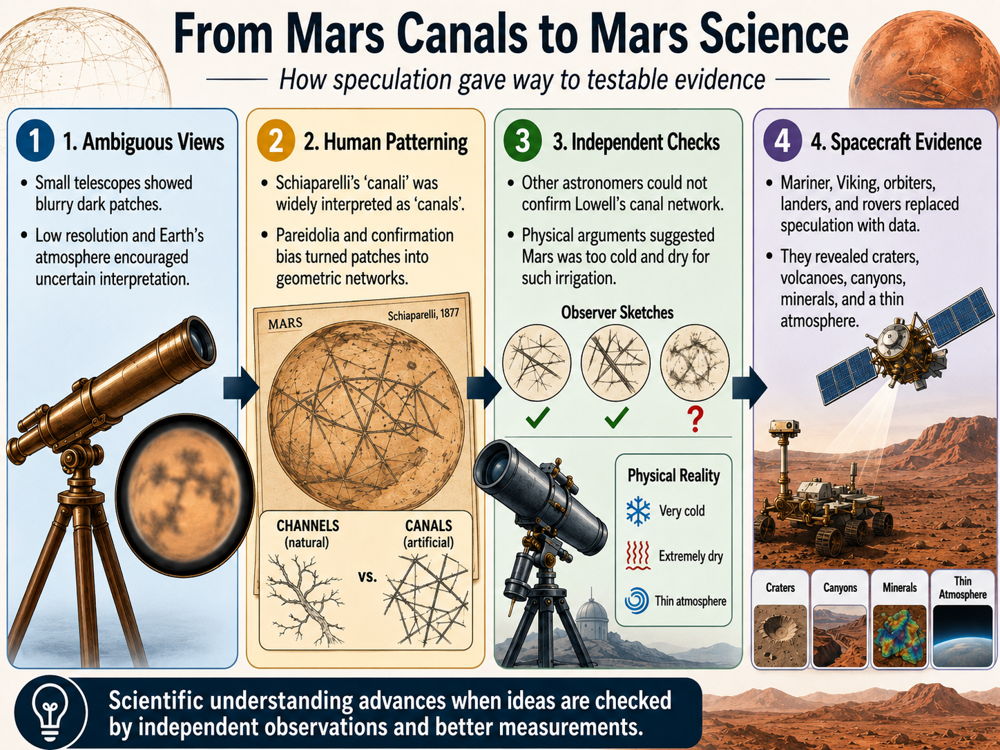
Fig. 7.1 Mars science moved from ambiguous visual impressions to independent checks and spacecraft measurements. The canal story is useful because it shows how a real observation can be pushed too far when interpretation outruns evidence. Image credit: Instructor-created course media.#
Other scientists were not convinced. Many astronomers did not see Lowell’s canal network, even with larger telescopes. Alfred Russel Wallace, who independently developed the idea of natural selection, argued from physical conditions that Mars was probably too cold for open liquid water. Wallace also pointed out a simple engineering problem: Lowell’s canals were drawn as straight lines stretching hundreds or thousands of miles, while real canals and rivers follow topography.
Wallace’s objection is a good example of using more than eyesight. Telescopic observing asked, “What do I think I see?” Physical reasoning asked, “Could that interpretation work on a real planet?” Those are different tests. A drawing of straight lines may be suggestive, but temperature, pressure, gravity, and topography can make the suggested interpretation unrealistic.
Checkpoint
Why did the translation from canali to canals change the kind of claim people thought was being made about Mars?
Some of Lowell’s lines corresponded roughly to real features, such as canyons or albedo boundaries, but the canal network itself was not a real Martian civilization. A better explanation is pareidolia, the tendency to see meaningful patterns in ambiguous data. That does not mean Lowell was foolish. It means he was human. Individual scientists can see what they expect to see. The strength of science is that a community can test, compare, and eventually correct those interpretations.
7.2. A modern portrait of Mars#
Spacecraft changed Mars from a world of stories into a world of measurements. The change was not immediate. It took decades of missions, failures, landings, orbiters, rovers, and laboratory-style experiments to build the modern picture.
7.2.1. Spacecraft replaced canals with craters, rocks, and atmosphere#
NASA’s Mariner 4 flew by Mars in 1965 and returned the first close-up images of the surface. The images were low-resolution by modern standards, but they were decisive in one respect: Mars showed craters, not canals. The measured surface conditions were also harsh. Mars had low pressure and cold temperatures, not the comfortable Earthlike environment that canal advocates had imagined. This was a painful but productive kind of scientific progress: a beautiful idea was replaced by a colder, more complicated reality.
The Viking 1 and Viking 2 missions reached Mars in 1976. Each mission included an orbiter and a lander. The landers showed a desolate, rocky landscape under a thin atmosphere. The orbiters mapped the planet and also gave the public one of the most famous examples of Martian pareidolia: the so-called Face on Mars. Later, higher-resolution images showed it was an eroded landform, not a monument.
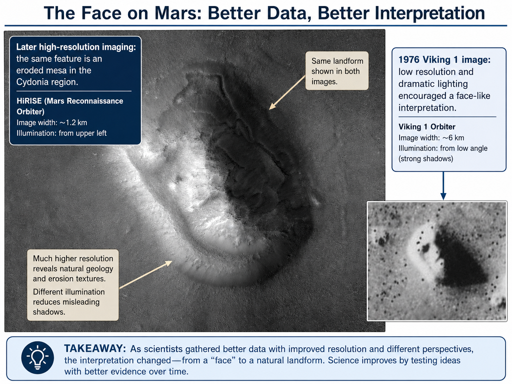
Fig. 7.2 The “Face on Mars” is a useful example of how interpretation changes when better evidence becomes available. The inset shows the famous 1976 Viking 1 view, where low resolution and strong shadows encouraged a face-like appearance. The larger image shows the same landform in the Cydonia region using much higher resolution imaging, revealing an eroded mesa rather than an artificial structure. This is the main scientific lesson: as resolution, lighting coverage, and contextual data improve, explanations can be tested and revised. Image credit: adapted and annotated from NASA/JPL/University of Arizona public-domain source image via Wikimedia Commons.#
{kind=link}
Mars exploration then slowed. Mission failures, budget limits, and political shifts created a gap of roughly two decades. Pathfinder landed in 1997 with the small Sojourner rover and helped restart sustained Mars exploration. Since then, orbiters, landers, and rovers have built a much richer picture. Perseverance landed in Jezero Crater in 2021 and carried Ingenuity, the first aircraft to fly on another planet.
Each mission added a different kind of evidence. Orbiters are like global surveyors: they map the planet, identify minerals, and watch weather over large areas. Landers and rovers are more like field geologists: they touch the ground, inspect rocks, and connect close-up textures to the broader landscape. Mars science needs both views, because a single rock is hard to interpret without a map, and a map is hard to interpret without ground truth.
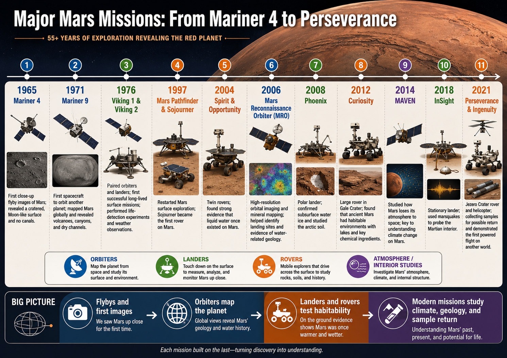
Fig. 7.3 The exploration history of Mars changed the central question. Early spacecraft ruled out canals and a surface civilization; later rovers and orbiters turned Mars into a test case for ancient habitability. Image credit: Instructor-created course media.#
Checkpoint
How did spacecraft exploration narrow the search from “civilization on Mars” to “possible past or subsurface microbial life”?
That shift connects directly to earlier chapters. Chapter 1 introduced the idea that extraterrestrial life does not have to mean intelligent aliens. Chapter 2 emphasized that scientific claims require testable evidence. Mars forces us to apply both ideas at once. It also shows why null results matter. Mariner 4 and Viking did not find canals, cities, or obvious biology, but those negative results redirected the science toward better questions.
7.2.2. What Mars is like today#
At first glance, modern Mars can look like some deserts on Earth. Spacecraft images show dusty plains, dunes, layered rocks, buttes, dried channels, and crater walls. The resemblance is helpful, but it can also mislead. Mars is not simply a colder Arizona. Its atmosphere is far thinner than Earth’s, its air is mostly carbon dioxide, and its surface has no breathable oxygen. The visual similarity is a reminder that habitability is not judged from scenery alone. A place can look familiar while the pressure, temperature, radiation, and chemistry are completely wrong for unprotected life.
The average surface pressure on Mars is only about \(0.006\) times Earth’s sea-level pressure. That low pressure explains why there are no stable lakes, rivers, or puddles on the surface today. Exposed liquid water tends to boil or evaporate at such low pressure. At the same time, Mars is cold enough that water also freezes quickly. Liquid water is therefore unstable on the modern surface: it cannot remain liquid for long under ordinary present-day conditions. The situation is similar to trying to keep a snow cone intact in a freezer that is also connected to a vacuum pump: cold favors ice, low pressure favors vapor, and ordinary liquid water has almost no comfortable middle ground.
Mars also has no ozone layer like Earth’s. Ultraviolet light from the Sun reaches the surface more directly, breaking chemical bonds and making the uppermost soil chemically harsh. Mars does have more gravity than the Moon, about \(0.38g\) compared with the Moon’s \(0.17g\), and its day-night cycle is close to Earth’s, but those similarities do not make the surface habitable.

Fig. 7.4 Earth and Mars look like related rocky worlds, but the visual similarity hides enormous environmental differences. Mars has a thin carbon dioxide atmosphere, low pressure, cold surface temperatures, and no protective ozone layer. Image credit: NASA Astronomy Picture of the Day, NASA media.#
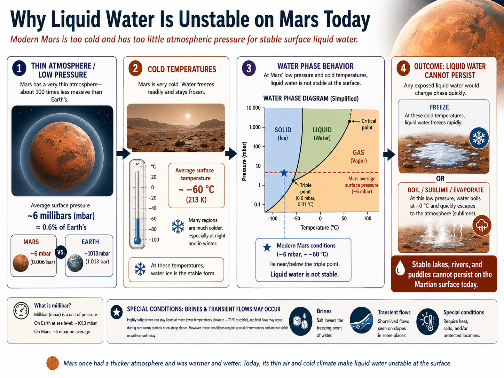
Fig. 7.5 Liquid water is not stable on the modern Martian surface because pressure, temperature, and radiation all work against it. This is why evidence for ancient water is not the same as evidence for present-day surface habitability. Image credit: Instructor-created course media.#
The communication delay is another reminder that Mars is nearby only in astronomical terms. At closest approach, Mars is still far enough away that a radio command cannot produce an instant response.
Try the numbers: light-time to Mars
At close approach, Mars can be about \(0.5\ {\rm AU}\) from Earth. Light takes about \(8.2\ {\rm min}\) to travel \(1\ {\rm AU}\). The one-way communication time is therefore
A command sent from Earth would take about four minutes to reach Mars at this favorable distance, and the reply would take about four minutes to come back. A rover cannot be driven like a remote-control car.
# Estimate one-way light travel time from Earth to Mars at a favorable close approach.
distance_to_mars_AU = 0.5 # approximate Earth-Mars distance at close approach (AU)
light_time_per_AU_min = 8.2 # light travel time for 1 AU (minutes)
one_way_time_min = distance_to_mars_AU * light_time_per_AU_min # one-way communication time (minutes)
round_trip_time_min = 2 * one_way_time_min # round-trip communication time (minutes)
print(f"At a distance of {distance_to_mars_AU} AU, a signal takes about {one_way_time_min:.1f} minutes to reach Mars.")
print(f"A command-and-response exchange would take about {round_trip_time_min:.1f} minutes, even before the rover does anything.")
At a distance of 0.5 AU, a signal takes about 4.1 minutes to reach Mars.
A command-and-response exchange would take about 8.2 minutes, even before the rover does anything.
7.2.3. Seasons, dust, and the color of the Martian sky#
Mars has seasons for two separate reasons. The first is the familiar Earthlike reason: Mars’ spin axis is tilted, so each hemisphere alternately leans toward or away from the Sun during the Martian year. When the northern hemisphere is tilted toward the Sun, it has summer while the southern hemisphere has winter. Half a Martian year later, the pattern reverses. This is the same basic geometry that gives Earth hemispherical seasons, but Mars stretches the schedule: one Martian year is about 1.87 Earth years, so each season lasts much longer.
The second seasonal effect comes from Mars’ orbit. Mars has a more elliptical orbit than Earth, so its distance from the Sun changes noticeably during the year. When Mars is near perihelion, the whole planet receives more sunlight. When Mars is near aphelion, the whole planet receives less sunlight. This is different from the tilt-driven seasons because it affects both hemispheres at the same time, even though each hemisphere still has its own summer or winter.
Kepler’s second law connects these two ideas. A planet moves faster when it is closer to the Sun and slower when it is farther away. Mars is currently near perihelion during southern summer, so southern summer is both warmer and shorter. Southern winter happens closer to aphelion, so it is colder and longer. The northern hemisphere gets the opposite pattern: northern summer occurs farther from the Sun, making it longer and milder, while northern winter occurs closer to the Sun, making it shorter and less extreme.
A useful analogy is a runner on an oval track who speeds up on one side and slows down on the other. The runner still completes one lap, but equal time intervals do not cover equal distances around the track. For Mars, this means equal slices of calendar time do not correspond to equal orbital arcs. The season near perihelion is compressed, while the season near aphelion is stretched out. The clock keeps ticking evenly, but the planet does not move evenly.
Checkpoint
Why does Mars have both tilt-driven seasons and distance-driven seasonal changes?
The result is that Mars does not simply have “Earthlike seasons, but longer.” It has hemispherical seasons caused by axial tilt, layered on top of a planet-wide distance-from-the-Sun effect caused by orbital eccentricity. That combination helps explain why the southern hemisphere experiences more extreme seasonal changes than the northern hemisphere.
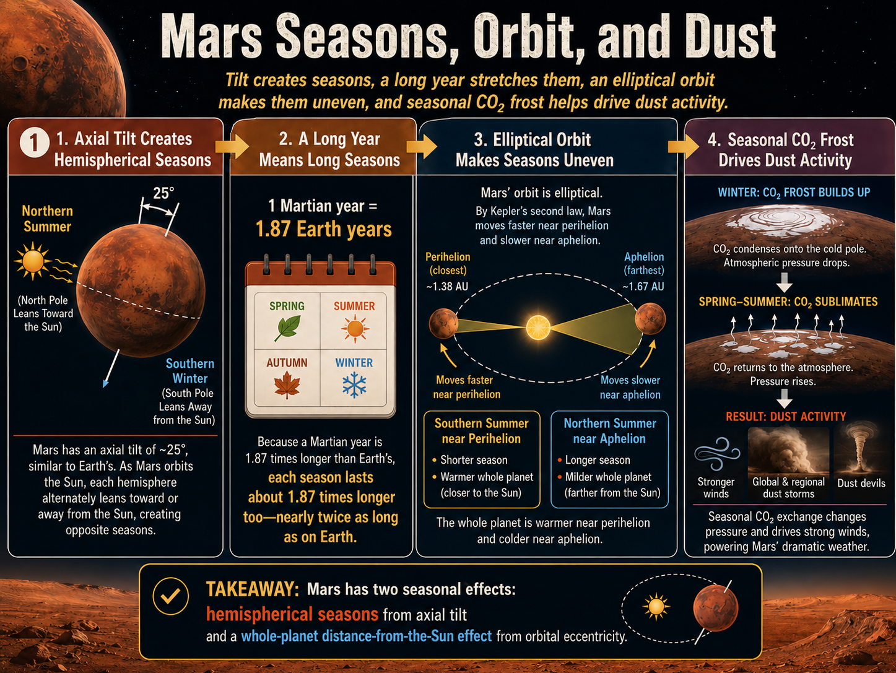
Fig. 7.6 Mars has familiar seasonal logic but unfamiliar consequences. Its tilt creates seasons, its long year stretches them, its elliptical orbit makes them uneven, and carbon dioxide frost helps drive winds and dust storms. Image credit: Instructor-created course media.#
Martian dust also helps explain the sky. Fine dust scatters sunlight and gives the sky a yellow-brown or butterscotch color. Without dust, the daytime sky would look much darker because the thin atmosphere would scatter much less light. Spacecraft images are not always calibrated to match human vision. Mission teams sometimes use filters or color processing to emphasize mineral differences, surface textures, or engineering details. A blue-looking sky in a Mars image does not necessarily mean a human standing there would see a blue sky.
Dust also connects small particles to planet-scale climate. Individual grains are tiny, but when enough of them are lifted by wind, they absorb and scatter sunlight, warm parts of the atmosphere, cool parts of the surface, and change how much sunlight reaches solar panels. In that sense, Martian dust behaves less like household dust and more like a moving atmospheric ingredient.
Checkpoint
Why are Mars seasons not simply “Earth seasons, but colder”?
The old seasonal-vegetation idea was therefore a misreading. Dark and bright patches can change, but dust movement and viewing geometry explain much of that behavior without requiring plant life.
7.2.4. Major geological features of Mars#
Mars has several large-scale features that organize nearly every discussion of its geology: the polar caps, the Tharsis Bulge, Valles Marineris, and the Hellas Basin. Mars has only about one quarter of Earth’s surface area, roughly comparable to Earth’s land area, so these features dominate a planet-sized landscape.
One of the biggest mysteries is the difference between the northern and southern hemispheres. The northern lowlands are lower in elevation, less heavily cratered, and appear to have thinner crust. The southern highlands are higher, thicker, and much more cratered. This north-south dichotomy is not fully explained. One hypothesis is that a giant impact removed or thinned crust in the north. Other models connect the dichotomy to internal dynamics or early crust formation. The important point is not that we already know the answer, but that the surface pattern gives us a question to test.
The dichotomy is like finding one side of an old building heavily scarred and the other side smoother and lower. You would immediately ask whether the two sides were built differently, damaged differently, resurfaced at different times, or altered by some later event. Planetary geologists ask the same style of question, only the “building” is an entire world.

Fig. 7.7 Global topography shows that Mars is not a uniform desert. The southern highlands are generally higher and more cratered, while the northern lowlands are lower and smoother. The map also highlights Tharsis, Valles Marineris, and Hellas Basin. Image credit: NASA/JPL/GSFC, NASA media.#
Interactive: Explore Mars with NASA Mars Trek
NASA’s Mars Trek is an interactive map of Mars that lets you explore the planet’s surface, topography, and major landmarks in more detail than a static figure can show.
Open the interactive here: NASA Mars Trek
As you explore, try to locate:
Olympus Mons
Valles Marineris
Hellas Basin
the polar caps
major rover landing sites
Use the map to connect surface features to the geologic story of Mars. In particular, notice how elevation, crater density, and regional context help scientists interpret whether an area records volcanism, impacts, erosion, or past water activity.
Cratering helps scientists estimate relative surface ages. Older surfaces usually have more impact craters because they have been exposed longer. Younger surfaces have fewer craters because lava, erosion, sediment, or other processes have erased older impacts. Crater counts are not as precise as radiometric dating, but they allow scientists to map broad eras in Martian history: the Noachian, Hesperian, and Amazonian. The logic is similar to comparing two sidewalks after years of hailstorms. The more dented sidewalk is probably older or less recently repaired, but you still need caution because resurfacing can erase the dents.
The northern plains contain features that look like lava flows, suggesting that volcanism may have buried older craters. Some faint “ghost craters” remain, partly visible below the younger surface. Why the northern plains were resurfaced more than the southern highlands is still debated. Differences in crust thickness, volcanism, sediment transport, water, or impact history may all matter.
Checkpoint
Why does a heavily cratered surface usually indicate an older surface, and why is that still only an estimate?
The surface of Mars is therefore a record, but not a simple one. As in Chapter 4, geology is useful because rocks, craters, minerals, and layers preserve traces of processes that are no longer active in the same way.
7.2.5. Tharsis, Olympus Mons, and Valles Marineris#
The Tharsis Bulge is an enormous volcanic province about 4000 kilometers across. It sits mostly above the average Martian surface level and includes some of the largest volcanoes in the Solar System. Olympus Mons rises about 26 kilometers above the surrounding surface, roughly three times the height of Mount Everest above sea level. Its base is about 600 kilometers across, and its rim cliff is several kilometers high.
Mars could build such huge volcanoes partly because it lacks Earthlike plate tectonics. On Earth, plates move over hot spots, so volcanic activity tends to form chains like the Hawaiian Islands. On Mars, a hot spot could remain under the same region for a long time. Lower surface gravity also helps volcanoes grow taller before their slopes fail. A kitchen analogy is holding a pancake batter dispenser over one spot instead of moving it across the pan: material piles up in one place rather than forming a trail.
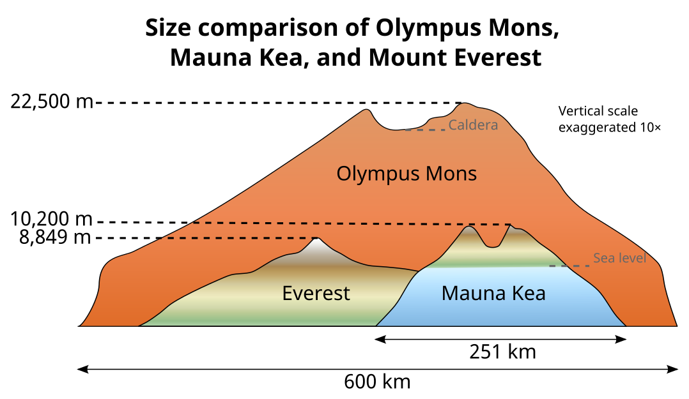
Fig. 7.8 Olympus Mons rises far above the surrounding Martian surface, making it much taller than either Mauna Kea or Mount Everest. The comparison also shows that Olympus Mons is broad rather than sharply peaked, which is important for recognizing it as a giant shield volcano. Image credit: adapted from work by Sémhur, Zetrs, Sgbeer, and Andrei Stroe via Wikimedia Commons, licensed under CC BY-SA 3.0. English translation and retouching by the instructor.#
{kind=link}
Olympus Mons is often introduced by its height because that is the easiest comparison for students to recognize. But height alone can be misleading, because it can make the volcano seem like a sharper or steeper version of a terrestrial mountain.

Fig. 7.9 Olympus Mons is not just tall; it is enormous across. Its base is about 600 km wide, comparable to the size of France. This helps explain why Olympus Mons is a broad shield volcano with gentle slopes rather than a narrow, pointed peak. Image credit: Sémhur/Wikimedia Commons, CC BY-SA 4.0.#
{kind=link}
The width comparison is important because students may otherwise imagine Olympus Mons as a giant version of Mount Everest. In reality, it is so broad that someone standing on its slopes might not easily recognize the entire structure as a single volcano.
Valles Marineris is a vast system of canyons stretching thousands of kilometers, roughly across the width of the continental United States. It is several times deeper than the Grand Canyon. Its origin is still debated. It may be connected to tectonic stresses and uplift around Tharsis, but water, landslides, collapse, and erosion also shaped parts of the canyon system. Calling it the “Grand Canyon of Mars” is useful for scale, but it can be misleading if it makes students imagine the same formation process. Similar-looking landforms can have different histories.

Fig. 7.10 Valles Marineris is not just a larger Grand Canyon. The U.S. outline gives students an immediate scale comparison: this canyon system is continental in size. Image credit: NASA/JPL-Caltech, NASA media.#
Spectra and images from orbit show that some valleys and canyon walls contain layered rocks and minerals that formed in the presence of water. Those layers could have been produced by sedimentary processes, volcanic deposits, groundwater alteration, or combinations of these. If Tharsis uplift exposed rocks that were once underground, those layers may preserve environments where liquid water once interacted with crustal minerals. That makes them astrobiologically interesting even if they are not evidence for life by themselves.
Checkpoint
Why would layered rocks inside a canyon be more useful for astrobiology than a smooth, wind-blown plain?
Surface features help scientists ask better questions: what process made this landform, when did it operate, and what environment did it require? Volcanic surfaces on Mars show that eruptions became less frequent over time as the smaller planet cooled. Some crater counts on volcanic slopes suggest geologically young surfaces, perhaps tens to hundreds of millions of years old. Martian meteorites found on Earth also show that pieces of Mars have been blasted into space and delivered to our planet.
This is why Mars geology matters for astrobiology. A volcano, canyon, or crater is not only scenery; it is a clue to heat, water, crustal stress, burial, exposure, and preservation. Life detection depends on those conditions because even if life once existed, evidence would only survive in the right geologic settings.
7.2.6. Evidence that water once flowed on Mars#
The strongest reason Mars remains central to astrobiology is not Lowell’s canals. It is the much better evidence that real liquid water once existed there. Orbital images from Mariner 9 and the Viking orbiters revealed features that looked like dry riverbeds and outflow channels. Later orbiters found many more channels, deltas, layered deposits, and minerals that strengthened the case. The shift is important: the old canal story depended on interpreting blurry lines as engineering, while the modern water story depends on many independent geological and chemical clues.
Some channels appear to have been carved by rainfall or runoff. Others look like debris flows or catastrophic floods from underground sources. Crater counts suggest many valley networks formed roughly three billion years ago, when Mars likely had a warmer and thicker atmosphere. Impact craters also preserve clues: small craters are missing in some ancient terrains, and larger crater rims look softened or eroded, consistent with rainfall, flowing water, or water-rich sediment movement.
Minerals provide an independent line of evidence. Spectra from orbit and measurements from rovers show hydrated minerals, meaning minerals that contain water or hydroxide in their structure. Clay minerals, hydrated sulfates, and hydrated silica all point to chemical interaction with water. Opaline silica is especially interesting because it can form in hot springs or hydrothermal environments, which are useful analogs for possible habitats.
Minerals matter because they are not just colored rocks. They are chemical records of the conditions under which they formed or changed. A clay mineral is a little like a receipt left behind by water-rock chemistry: it does not show the water flowing, but it records that water helped rewrite the rock’s chemistry.
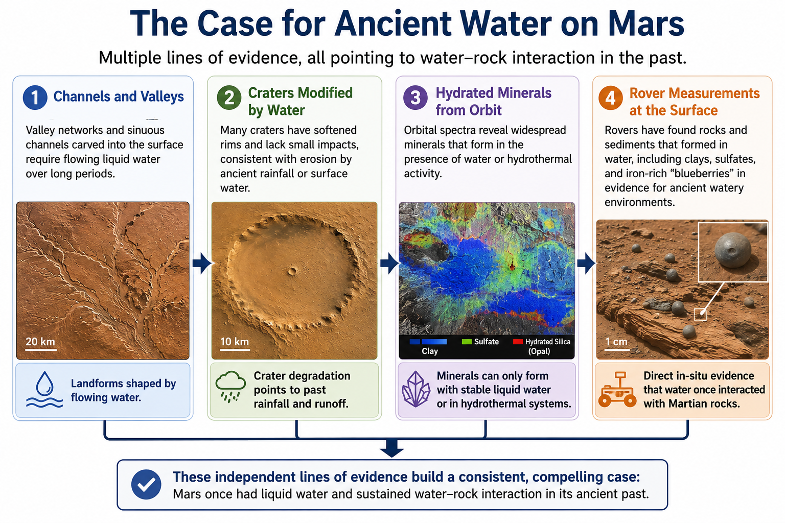
Fig. 7.11 The case for ancient Martian water is strongest because it does not depend on one type of observation. Channels and valleys, modified craters, hydrated minerals, and rover measurements all point toward past water-rock interaction on Mars. Image credit: Instructor-created course media.#
Checkpoint
Why is the evidence for ancient water stronger when landforms, minerals, and rover measurements all point in the same direction?
This is the same kind of reasoning used in geology on Earth. In Chapter 4, rocks and minerals were treated as records of past environments. On Mars, they play the same role, but the record is harder to read because we have fewer samples and cannot yet walk through the field site with a full laboratory.
7.2.7. Rovers and the changing history of Martian water#
Rovers strengthened the water story because they could examine rocks at the surface. Spirit, Opportunity, Curiosity, and Perseverance all found mineral evidence that liquid water once altered Martian rocks. Opportunity famously found tiny hematite-rich spheres nicknamed “blueberries” embedded in jarosite-bearing rocks. Hematite and jarosite can form in salty, acidic water, suggesting that Opportunity’s site recorded a chemically harsh watery environment.
Curiosity found a different story in Gale Crater. It explored clay-bearing sedimentary rocks, rounded pebbles, and mineral assemblages consistent with a former lake environment. Some of the oldest layers suggested relatively fresh, drinkable water by Earth standards, while younger layers higher on Mount Sharp recorded saltier and more acidic conditions. That difference matters. Mars did not simply go from wet to dry everywhere at once. Its water environments changed over time and from place to place.
That layered history is similar to reading pages in a damaged book. The oldest pages are not always complete, and some pages may have been torn out or overwritten, but the order and texture of the remaining layers still carry information. Curiosity’s climb through Gale Crater is powerful because it samples a sequence, not just a single point.

Fig. 7.12 Opportunity found small hematite-rich spherules nicknamed “blueberries.” They are not fossils, but they are valuable because hematite and jarosite can form through water-related chemistry, helping reconstruct ancient environmental conditions. Image credit: NASA/JPL-Caltech/Cornell/USGS, NASA media.#
Perseverance is adding a different kind of field site. Jezero Crater once held a lake fed by a river. The rover has examined delta deposits where river sediments accumulated in alternating layers. Some boulders suggest occasional flash floods strong enough to move large rocks. A delta is not automatically a biosignature, but it is an excellent place to preserve fine-grained sediments, organic molecules, and environmental context. On Earth, deltas are natural sorting machines: flowing water drops heavier material first and finer material later, building layered archives of changing conditions.
Checkpoint
Why might Curiosity and Opportunity find evidence for water but still describe very different ancient environments?
The changing chemistry of Martian water is central to the search for life. A planet can be habitable in some places, at some times, and not others. The useful question is not simply “Was there water?” It is “What kind of water, for how long, with what chemistry, and in what geologic setting?” For life, water is not magic by itself. A brief, acidic, salty pulse is very different from a stable lake with usable chemical energy and gentle conditions. The word “water” hides many environmental possibilities.
7.2.8. Floods, ice, and water that remains today#
Some Martian channels look too large to be ordinary rivers. They appear to have been carved by catastrophic floods, sometimes with no obvious lake or reservoir upstream. One interpretation is that water or ice was stored underground and released suddenly. Impacts or volcanic heating could have melted subsurface ice, producing short-lived floods. These events may have been brief, but they still matter because temporary liquid water can create local habitats or preserve evidence of past environments.
The distinction between long-lived rivers and sudden floods matters for habitability. A brief flood can carve a dramatic channel without providing a stable ecosystem for long. It is like a fire hose sprayed across dry ground: the water can reshape the surface quickly, but that does not mean the ground stayed wet for years.
Mars still contains water today, mostly as ice. The polar caps are largely water ice, with seasonal carbon dioxide ice layered on top. The Phoenix lander found shallow subsurface ice hundreds of kilometers from the north pole. Orbital observations also show widespread ground ice. The amount of known ice would be enough to cover the planet in a global layer tens of meters deep, not enough to recreate a deep ocean by itself, but enough to show that water has not simply vanished. Some of it is stored in places that are cold, buried, or chemically protected, rather than exposed as liquid at the surface.
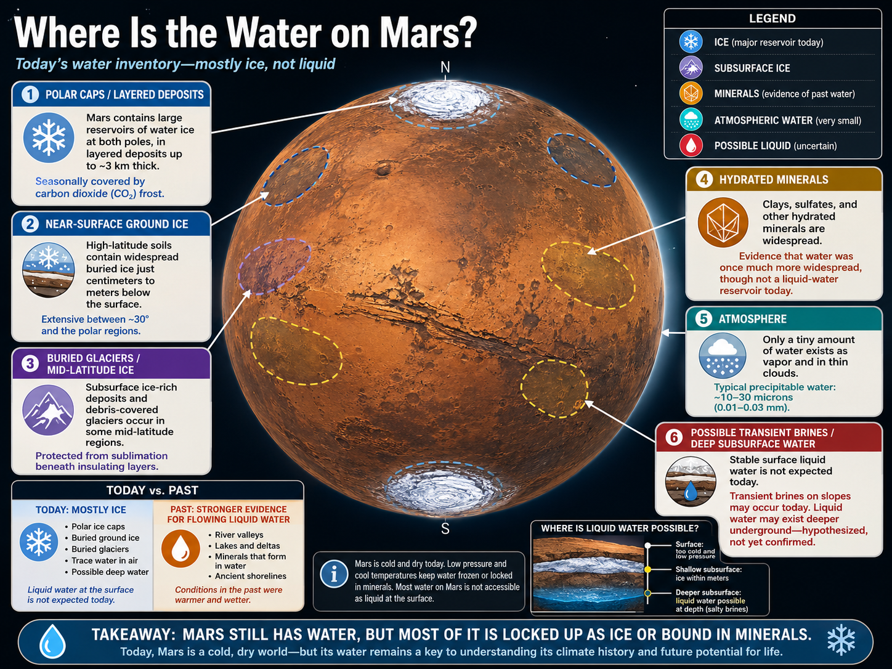
Fig. 7.13 Modern Mars still contains water, mostly as ice. Ice deposits and the deuterium-to-hydrogen ratio help scientists estimate how much water Mars lost over time. Image credit: Instructor-created course media.#
The deuterium-to-hydrogen ratio, usually written D/H, gives another clue. Ordinary hydrogen escapes to space more easily than heavier deuterium. If Mars lost a large amount of water, the remaining water should become enriched in deuterium. That is what scientists observe. The isotope evidence suggests that ancient Mars had substantially more water than modern Mars.
Try the numbers: global equivalent layer
Planetary scientists often describe water inventory using a global equivalent layer: the depth of water you would get if the same volume were spread evenly over the whole planet. Suppose the known water ice could make a \(25\ {\rm m}\) global layer. If ancient Mars once had enough water for a \(100\ {\rm m}\) global layer, then the known ice would represent
or about \(25\%\) of that simple ancient-water estimate.
# Compare a modern ice estimate with a simple ancient-water estimate using global equivalent layer depths.
modern_ice_layer_m = 25 # approximate global equivalent layer from known modern water ice (m)
ancient_water_layer_m = 100 # example ancient global equivalent water layer (m)
fraction_remaining = modern_ice_layer_m / ancient_water_layer_m # fraction of ancient estimate represented by modern ice
percent_remaining = 100 * fraction_remaining # percentage form
print(f"A {modern_ice_layer_m}-meter modern ice layer is {percent_remaining:.0f}% of a {ancient_water_layer_m}-meter ancient water estimate.")
print("This simple comparison shows why modern ice is important evidence, even if most ancient water was lost or locked away.")
A 25-meter modern ice layer is 25% of a 100-meter ancient water estimate.
This simple comparison shows why modern ice is important evidence, even if most ancient water was lost or locked away.
Claims of liquid water on Mars today are more uncertain. Some dark streaks and gullies once looked like possible flows, but later studies suggest many are better explained by dry granular movement, dust, frost, or salts. A more plausible place for present-day liquid water is below the surface, where pressure is higher, temperatures can be less extreme, and salts can lower the freezing point. Even if brines exist today, the total amount of liquid water would be small compared with the ancient water record.
This is why the chapter keeps separating water evidence into ancient surface water, modern ice, and possible modern brines. They are not interchangeable. Ancient rivers speak to past climates and possible surface habitats. Modern ice tells us where water is stored now. Possible brines would matter for present habitability, but they would be local, chemically challenging, and difficult to confirm.
7.3. The climate history of Mars#
The water evidence raises a climate problem. Mars today is cold and dry, yet its surface preserves channels, lake sediments, hydrated minerals, and possible hydrothermal deposits. Something about ancient Mars had to be different. The problem is not merely that Mars had water; it is that water appears in settings that require pressure, temperature, and chemistry to cooperate at the same time.
7.3.1. Why a warmer, wetter Mars is hard to explain#
A stronger greenhouse effect is the usual starting point. Mars’ atmosphere today is dominated by carbon dioxide, but it is too thin to warm the planet much. Ancient volcanism could have outgassed a much thicker atmosphere, raising pressure and making liquid water more stable. A thick atmosphere also helps distribute heat and protect surface water from rapid evaporation. Atmosphere acts a bit like a planet’s blanket and pressure lid at the same time: it traps some outgoing heat and keeps liquid water from boiling away too easily.
But the fainter Sun in the distant past supplied less energy than the modern Sun. That makes the problem harder, not easier. Carbon dioxide alone may not have been enough to keep Mars warm for long periods. Other greenhouse gases, such as methane, sulfur dioxide, or hydrogen, may have contributed. Another possibility is that Mars was not continuously warm. Large impacts, volcanic eruptions, or bursts of greenhouse gases may have produced intermittent warm periods when liquid water flowed for geologically short times.
This distinction changes the kind of world we imagine. A continuously warm Mars would resemble a long-lived cold Earth analog, with rivers and lakes stable over extended intervals. An intermittently warm Mars would be more like a mostly frozen desert that occasionally thaws after major disruptions. Both histories can leave evidence for water, but they imply different chances for life.
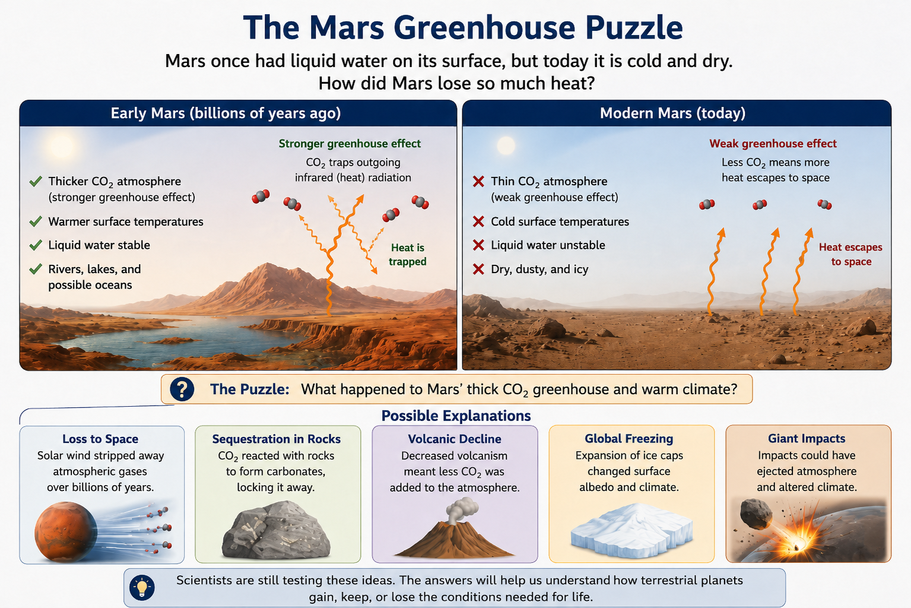
Fig. 7.14 The Mars greenhouse puzzle is that ancient Mars shows evidence for liquid water even though the young Sun was fainter, while modern Mars has a thin atmosphere, weak greenhouse effect, and unstable surface liquid water. Possible explanations include atmospheric loss to space, carbon dioxide locked into rocks, declining volcanic outgassing, global freezing, and climate disruption from large impacts. Image credit: Instructor-created course media.#
Checkpoint
Why does evidence for ancient rivers not automatically prove that Mars had a warm, wet climate for billions of years?
The careful wording matters. Evidence suggests Mars had liquid water in the past, but the extent, duration, and timing of that water remain active research questions. Habitability depends on whether water, energy, chemistry, and environmental stability overlapped long enough for life to arise or survive.
This is the difference between weather and climate written across deep time. A single warm event can move water and leave deposits, just as one storm can flood a dry streambed on Earth. A long-lived climate state is different: it allows environments to persist, react chemically, bury sediments, and possibly support ecosystems over many generations. Mars may preserve evidence for both short episodes and longer-lasting settings, and distinguishing them is essential.
7.3.2. Why Mars changed#
Mars’ atmosphere did not simply disappear in one step. Atmospheric gas can be lost or stored in several ways. Ultraviolet radiation can break molecules apart, and light atoms can gain enough energy to escape to space. Solar wind particles can strip atmospheric gas, especially after Mars lost a strong global magnetic field. Heavier gases can react with surface rocks, helping rust the surface. Cooling can also freeze gases out of the atmosphere, burying them in ice or sediments. This “refrigerator effect” can become a feedback loop: a thinner atmosphere cools the planet, which removes more gas, which cools it further.
A bank-account analogy helps. Mars did not lose its climate savings through one giant withdrawal. Gas could be spent to space, locked into rocks, frozen into deposits, or no longer replaced by volcanism. Habitability depends on the balance between deposits and withdrawals over time.
MAVEN was designed to study atmospheric escape from Mars. Its measurements support the idea that the solar wind continues to remove atmospheric particles today. That modern loss rate cannot by itself tell the whole ancient story, but it provides a physical process that connects Mars’ weak magnetic shielding, low gravity, and long-term atmospheric loss.
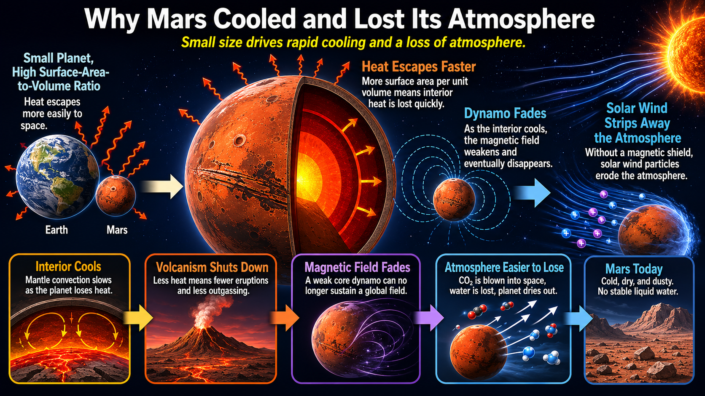
Fig. 7.15 Mars probably changed through multiple atmospheric-loss and gas-storage processes rather than through a single event. Those processes connect interior cooling, weak magnetic shielding, surface chemistry, and climate feedback. Image credit: Instructor-created course media.#
Mars’ small size is the underlying reason many of these changes happened. It was large enough to have volcanism and outgassing early in its history, but too small to retain internal heat as effectively as Earth. As the interior cooled, volcanism weakened and released less gas. The dynamo that may once have generated a global magnetic field shut down. With weaker magnetic shielding and lower gravity, atmospheric escape became more effective. This creates a chain rather than a list: size affects cooling, cooling affects volcanism and magnetism, volcanism and magnetism affect the atmosphere, and the atmosphere affects surface water.
Checkpoint
How are Mars’ small size, weak magnetic field, and atmospheric loss connected rather than separate facts?
This is a planetary habitability lesson, not just a Mars fact. A rocky world’s size influences how long it can stay geologically active, whether it can maintain a magnetic field, and whether it can keep replenishing an atmosphere. Size is not destiny by itself, but it sets the pace of planetary aging.
7.3.3. Try the numbers: why small worlds cool faster#
A simple geometric ratio helps explain why smaller worlds cool faster. Heat stored inside a planet roughly scales with volume, while heat escaping from the planet roughly scales with surface area. For a sphere of radius \(R\), the surface-area-to-volume ratio is
A smaller radius gives a larger surface-area-to-volume ratio. That means more surface through which heat can escape for each unit of interior volume. This is why a small cookie cools faster than a thick loaf of bread, even if both come out of the oven at the same temperature. The cookie has more exposed surface compared with its interior.
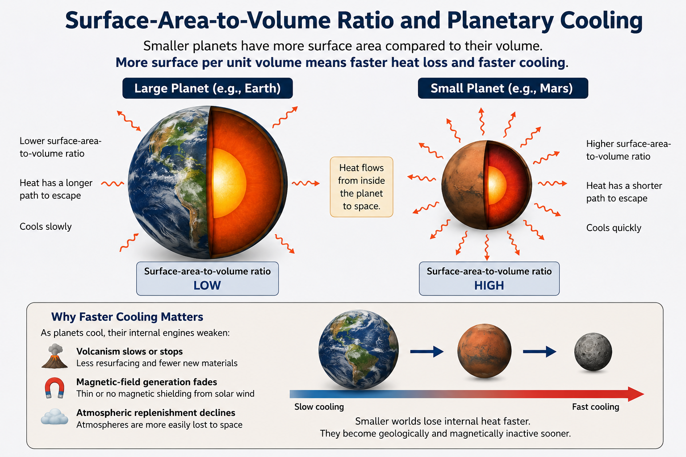
Fig. 7.16 Smaller rocky worlds lose internal heat faster because they have more surface area compared with their volume. Faster cooling weakens the internal engine that drives volcanism, magnetic-field generation, and atmospheric replenishment, helping explain why Mars became geologically quieter and less able to maintain a thick atmosphere. Image credit: Instructor-created course media.#
For example, the Moon’s radius is about \(0.27\) times Earth’s radius. Since \(A/V = 3/R\), the Moon’s surface-area-to-volume ratio is about \(1/0.27\), or 3.7 times Earth’s. All else being equal, that geometry helps the Moon cool much faster than Earth. Mars is larger than the Moon but smaller than Earth, so it occupies a middle ground: geologically more active than the Moon, but less able than Earth to stay active for billions of years. The phrase “all else being equal” is important because radioactive heating, composition, and impact history also matter, but the size trend gives the first-order intuition.
# Compare surface-area-to-volume ratios using radius relative to Earth.
earth_radius_units = 1.00 # Earth's radius in Earth-radius units
moon_radius_units = 0.27 # Moon's radius in Earth-radius units
mars_radius_units = 0.53 # Mars' radius in Earth-radius units
moon_ratio_relative_to_earth = earth_radius_units / moon_radius_units # because A/V is proportional to 1/R
mars_ratio_relative_to_earth = earth_radius_units / mars_radius_units # because A/V is proportional to 1/R
print(f"The Moon's surface-area-to-volume ratio is about {moon_ratio_relative_to_earth:.1f} times Earth's.")
print(f"Mars' surface-area-to-volume ratio is about {mars_ratio_relative_to_earth:.1f} times Earth's.")
print("This helps explain why Mars cooled faster than Earth but more slowly than the Moon.")
The Moon's surface-area-to-volume ratio is about 3.7 times Earth's.
Mars' surface-area-to-volume ratio is about 1.9 times Earth's.
This helps explain why Mars cooled faster than Earth but more slowly than the Moon.
7.3.4. Tilt cycles and moving ice#
Mars’ climate also changes because its axial tilt varies over long timescales. Earth’s tilt changes too, and those changes contribute to ice ages. On Earth, the Moon helps stabilize the tilt, keeping the variation relatively small. Mars has no large moon, and it is closer to Jupiter, so gravitational tugs can drive much larger changes. The difference is like comparing a spinning top with a steadying hand nearby to one left wobbling on its own.
When Mars has a lower tilt, the poles receive less summer sunlight and ice can remain concentrated near the poles. At higher tilt, the poles receive more sunlight, polar ice can vaporize more easily, and ice can migrate toward lower latitudes. In extreme cases, carbon dioxide ice can accumulate or disappear in ways that change atmospheric pressure. These cycles do not require life, but they strongly affect where water ice, carbon dioxide frost, and possible transient liquid water might exist.
The key idea is redistribution, not creation from nothing. Tilt cycles move sunlight around, and sunlight moves ice around. A region that is too cold to lose ice during one orbital configuration may become a source of vapor during another. Over thousands to millions of years, that can reorganize the visible surface without requiring a new supply of water.
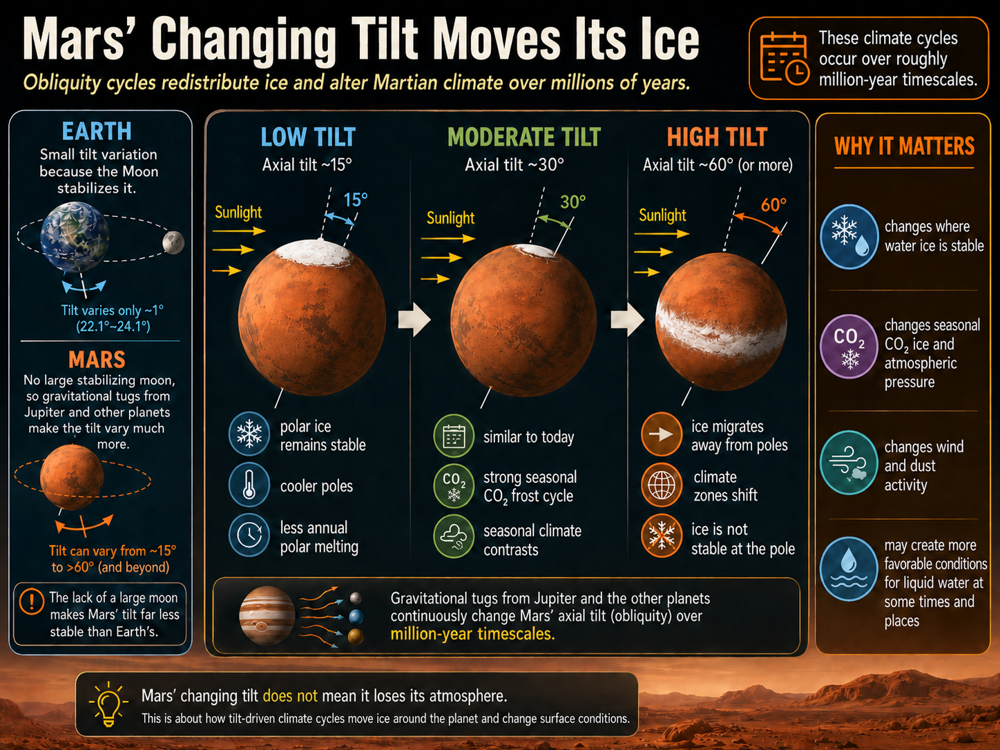
Fig. 7.17 Mars lacks a large stabilizing moon, so its tilt can vary strongly over long timescales. Those changes move ice and carbon dioxide between the poles, atmosphere, and lower latitudes. Image credit: Instructor-created course media.#
Checkpoint
Why can the same planet become more or less favorable for surface ice depending on its axial tilt?
Tilt cycles complicate the habitability story. Mars may have had local windows of liquid water even after the globally warmer era ended, especially if volcanism, impacts, or subsurface heat produced temporary melting. This is one reason astrobiologists avoid asking only whether an entire planet is habitable. A better question is where and when habitable conditions existed.
7.3.5. Is Mars habitable?#
Mars clearly has many ingredients relevant to life: carbon, hydrogen, oxygen, nitrogen, phosphorus, sulfur, metals, sunlight, chemical energy sources, and abundant water ice. The hard question is whether liquid water lasted long enough in the right places. Geological evidence strongly suggests surface water was available billions of years ago. Curiosity found that Gale Crater contained a habitable environment about 3.5 billion years ago, meaning an environment with liquid water, chemical ingredients, and possible energy sources. In everyday terms, Mars may have had many ingredients in the kitchen, but that does not prove the recipe for life was actually cooked.
That does not mean life existed there. Chapter 5 emphasized that life requires organized chemistry, metabolism, heredity, and evolution. A lake can be habitable without being inhabited. Young Mars may have had ingredients similar to young Earth, but Mars also dried out and lost much of its atmosphere. The modern surface is not a good habitat because liquid water is unstable, ultraviolet radiation is intense, and oxidizing chemistry is harsh. For a microbe, the exposed Martian surface would be like living in a freezer, under a germicidal lamp, inside reactive dust, with almost no air pressure.
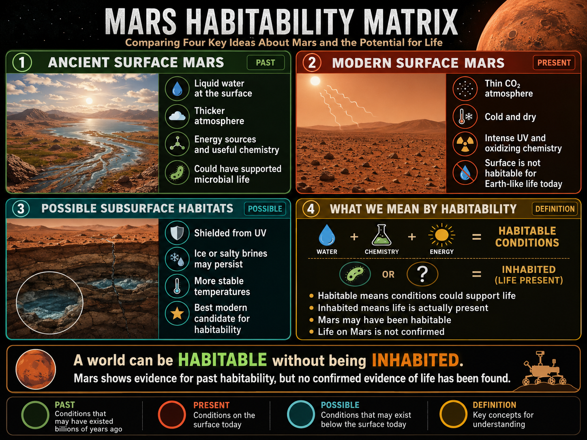
Fig. 7.18 Mars illustrates the difference between habitable and inhabited. Ancient surface settings may have been habitable, the modern surface is harsh, and the subsurface remains a possible target. Evidence of habitability is not evidence of life. Image credit: Instructor-created course media.#
Checkpoint
Why is “Mars may have been habitable” a weaker claim than “Mars had life”?
The most plausible modern Martian habitats, if any exist, are underground. Subsurface environments can provide shielding from radiation, higher pressure, and possible brines or water-rock reactions. That is why the search for life on Mars is now focused on ancient lake deposits, minerals that preserve environmental history, subsurface water clues, and samples that can be studied with far better instruments on Earth. The search has moved from “look for creatures” to “look for preserved environments, chemistry, and context,” which is a slower but more reliable way to ask the question.
7.4. Searching for life on Mars#
Mars life claims usually fall into three categories: Viking lander experiments, methane in the atmosphere, and Martian meteorites found on Earth. None has produced a confirmed detection of life. Each, however, teaches us something important about how difficult life detection can be. The challenge is not a lack of interesting signals; it is that interesting signals can have more than one cause.
7.4.1. Viking and the problem of ambiguous chemistry#
The Viking landers carried three biology experiments. The carbon assimilation experiment added Earth-based carbon dioxide and carbon monoxide to soil and looked for incorporation into material, as a plant or microbe might do. The gas exchange experiment added a nutrient broth and looked for released gases. The labeled release experiment added organic nutrients tagged with radioactive carbon and sulfur, then looked for radioactive gas released by possible metabolism.
The logic was clever. Radioactive tags made it possible to distinguish the added Earth-based material from Martian background carbon. Heating samples should reduce or destroy biological activity, so a heat-sensitive signal would be more suggestive of life than a signal that survived heating. In principle, this is like checking whether a mysterious reaction depends on an active ingredient: if heating kills the activity, biology becomes more plausible; if heating does not matter, chemistry becomes harder to rule out.
The results were mixed. Carbon assimilation occurred even when soil was heated, which pointed toward nonbiological chemistry. The gas exchange experiment released oxygen even in the dark, which made photosynthesis a poor explanation. The labeled release experiment gave the most positive-looking result, but the overall package was not enough to claim life. The experiments were therefore not a clean yes or no. They were more like a medical test that returns an abnormal result while other tests point to a nonmedical explanation.
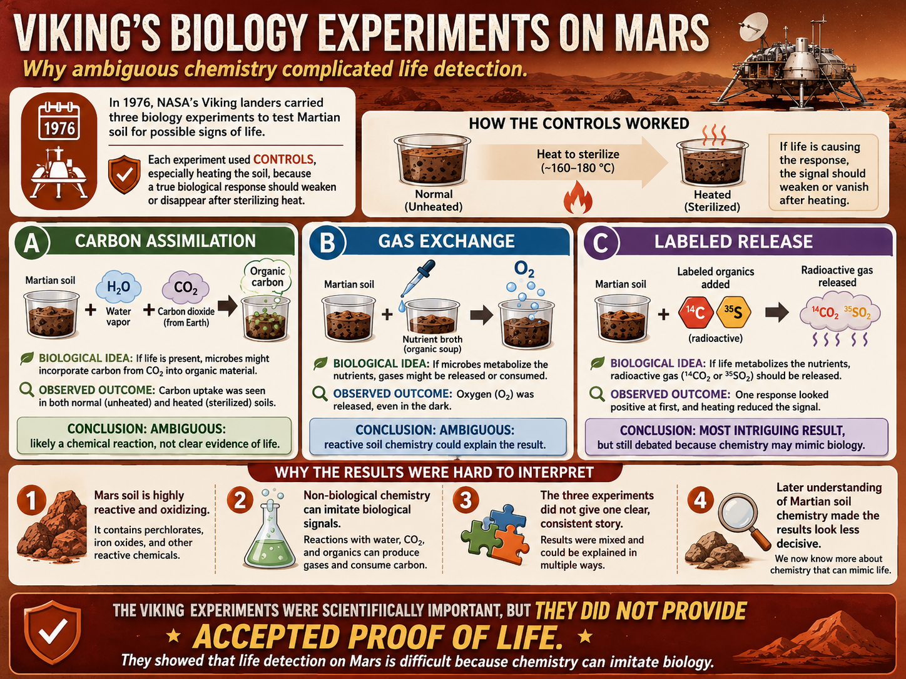
Fig. 7.19 Viking did not fail because the experiments were careless. It showed that life-detection experiments are hard when unfamiliar soil chemistry can mimic or destroy possible biological signals. Image credit: Instructor-created course media.#
Later missions helped explain why Viking was so ambiguous. Phoenix and Curiosity found perchlorates in Martian soil. Perchlorates are salts that can release oxygen and chlorine when heated and can destroy organic molecules. That means Viking’s heating steps may have altered the very organics the experiments were trying to test. Curiosity later found strong evidence for organic molecules on Mars, but those organics may have been delivered by meteorites or produced through nonbiological chemistry. Viking remains scientifically valuable, but inconclusive.
Checkpoint
Why can a positive-looking chemical result still fail to count as evidence for life?
The lesson connects to Chapter 2: a scientific claim must survive alternative explanations. A result that can be explained by reactive soil chemistry is not enough to establish biology.
7.4.2. Methane, meteorites, and the burden of proof#
Methane is interesting because it does not last indefinitely in the Martian atmosphere. If methane is present, it needs an active source. That source could be biological, but it could also be geological. First claims of Martian methane appeared in 2003 and 2004, including measurements from Mars Express and Earth-based telescopes. Curiosity later measured low and variable methane levels in Gale Crater. ESA’s ExoMars Trace Gas Orbiter, however, did not find methane higher in the atmosphere at the expected levels. Methane is therefore like smelling smoke without seeing the fire: it may point to something active, but the source still has to be found.
One possible reconciliation is that methane builds up near the surface at night and becomes diluted or destroyed during the day. Another possibility is that some detections are local, temporary, or affected by measurement limits. The important point is that methane is a candidate clue, not a biosignature by itself.

Fig. 7.20 Methane on Mars is intriguing because it requires a source, but the source need not be life. Geological processes, release from subsurface reservoirs, and atmospheric destruction all have to be considered before a biological interpretation. Image credit: NASA Goddard Scientific Visualization Studio, NASA media.#
Martian meteorites provide another route to evidence. Impacts can blast rocks off Mars, and some of those rocks eventually reach Earth. A famous meteorite, ALH 84001, was once claimed to contain possible fossil-like structures and chemical signatures of life. The claim generated intense debate, but most scientists today view the evidence as insufficient because nonbiological processes can explain the observations.
Meteorites are scientifically valuable, but they arrive without a field notebook. We may know they came from Mars, but we often do not know exactly where on Mars they formed, what nearby rocks looked like, or how later heating, shock, and time on Earth changed them. That missing context makes life claims harder to evaluate.
Checkpoint
Why would methane or a Martian meteorite be exciting but still not enough, by itself, to prove life on Mars?
Mars has repeatedly taught the same lesson: possible biosignatures are not the same as confirmed life. A strong claim needs multiple lines of evidence, independent checks, and careful exclusion of nonbiological explanations.
7.4.3. How we plan to search for life on Mars#
The best near-term strategy is to study well-chosen samples in Earth laboratories, though the exact Mars Sample Return architecture remains under review rather than being a guaranteed near-term launch plan. Robotic spacecraft are powerful, but complex experiments are difficult to miniaturize, sterilize, land, operate, and interpret remotely. We also do not know exactly what Martian life would look like if it existed. It might use familiar chemistry, or it might not. The Viking experience shows the danger of designing an experiment around assumptions that later turn out to be incomplete.
A rover is an extraordinary laboratory on wheels, but it is still a compromise. Every instrument has to survive launch, landing, dust, temperature swings, limited power, and remote operation. Earth laboratories can use larger instruments, cleaner sample preparation, repeated tests, and teams of specialists who can adjust the investigation as new clues appear.
Perseverance is collecting samples in Jezero Crater because Jezero preserves a former lake and river delta. A returned sample would allow laboratories on Earth to use many instruments, repeat measurements, compare results, and study the geologic context in much greater detail than a rover can. Sample return is especially valuable because life detection depends on small differences: mineral textures, organic molecules, isotope ratios, contamination history, and whether all of those clues point in the same direction. The rock is not the only evidence; the location, layer, and neighboring rocks are part of the evidence too.
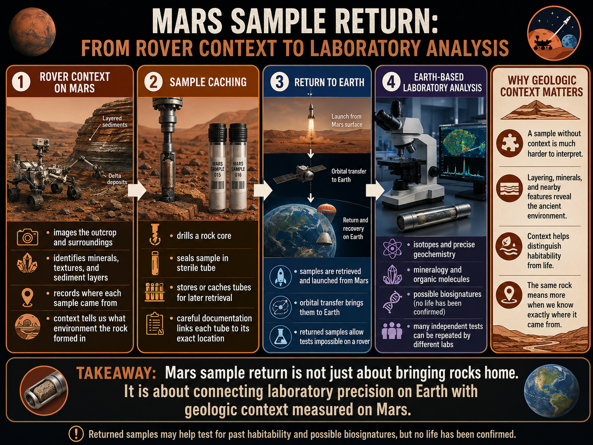
Fig. 7.21 Sample return matters because the context of a rock is part of the evidence. A sample chosen from a known ancient lake or delta deposit is more useful than an isolated rock with no geologic story. Image credit: Instructor-created course media.#
Sample return also creates contamination questions. Forward contamination means Earth microbes hitch a ride to Mars and later confuse our search for native Martian life. Back contamination means returned Martian material could pose a risk to Earth. Both risks are considered unlikely, but they cannot be ignored. The ethical issue is especially important if Mars has indigenous life. We would not want exploration itself to damage the very biosphere we hoped to discover. The scientific issue is just as serious: contamination could create false positives, hide real Martian signals, or make future discoveries permanently ambiguous.
Checkpoint
Why is contamination both a scientific problem and an ethical problem for Mars exploration?
The search for life on Mars is therefore not just a technical problem. It is a question of evidence, planetary protection, mission design, and scientific humility. The most exciting answer would be a clear biological signal, but the most useful process is slower: preserve context, test alternatives, and let several independent clues converge before drawing the strongest conclusion.
7.4.4. Ingenuity and the value of trying hard things#
Ingenuity was carried to Mars as a technology demonstration. Its goal was not to search for life directly. Its goal was to test whether powered, controlled flight could work in the thin Martian atmosphere. That was not obvious. Thin air makes it hard for rotor blades to generate lift, and the flight system had to operate autonomously because of the communication delay. The engineering challenge was similar to trying to fly at extreme altitude on Earth, except the aircraft also had to be light, robotic, solar powered, and far beyond real-time human control.
Ingenuity succeeded far beyond its original demonstration. NASA ended the flight mission in January 2024 after 72 flights, making it a much more successful experiment than its original short technology-demonstration plan. It showed that aerial scouts could help future missions survey terrain, plan rover routes, and inspect places that wheels cannot easily reach. In astrobiology, that matters because the best rocks are not always conveniently placed on flat ground.
This video explains why flying on Mars is physically difficult and why Ingenuity was such a successful technology demonstration. Focus on the thin-atmosphere engineering problem and on how aerial exploration could help future missions reach scientifically valuable terrain.
Checkpoint
How can a helicopter that does not directly detect life still improve the scientific search for life on Mars?
Ingenuity also illustrates a broader point: exploration technology changes the questions scientists can ask. Aerial scouting, autonomous navigation, sample caching, and eventual sample return all expand the kinds of evidence we can gather. Better mobility does not automatically produce better science, but it increases the chance of reaching the right outcrop, choosing the right route, and connecting local measurements to the larger landscape.
7.4.5. Should we send humans to Mars?#
Humans are much better field geologists than current robots. A trained person can notice an odd rock, change plans, use tools creatively, and connect observations quickly. On-site human judgment could make the next great discovery easier. That is the strongest scientific argument for sending people. A human geologist can do in minutes what a rover team may need days to plan, command, execute, and interpret.
The costs and risks are enormous. A crewed trip to Mars would take months one way, and the crew would need water, food, air, shelter, medical support, radiation shielding, and return fuel. Return opportunities depend on orbital alignment, so mission timing is constrained by the roughly 26-month Earth-Mars synodic cycle. Dozens of robotic missions could be launched for the price of one human mission. The tradeoff is not “humans good, robots bad.” It is a question of what kind of evidence is needed, how clean the site must remain, and how much risk society is willing to accept.
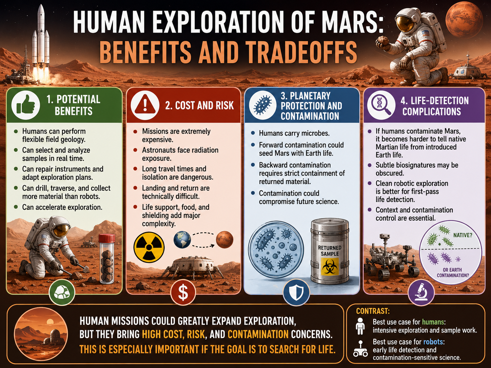
Fig. 7.22 Humans would be powerful explorers, but they would also be expensive, vulnerable, and biologically messy. Human exploration and pristine life detection are not automatically compatible goals. Image credit: Instructor-created course media.#
Humans also carry microbes. Preventing biological contamination would be extremely difficult. That matters less for a general geology mission than for a life-detection mission. If the goal is to determine whether Mars has native life, then sending humans too early could make the evidence harder to interpret. A human base would be a powerful research station, but it would also be a source of heat, exhaust, waste, leaks, and Earth organisms.
Terraforming Mars is even less practical with present technology. The usual idea is to add greenhouse gases, warm the planet, melt frozen carbon dioxide and water, and build a thicker atmosphere. But artificial greenhouse gases such as chlorofluorocarbons break apart under sunlight, and the required manufacturing scale would be far beyond anything currently available on Earth. Even optimistic scenarios require thousands of years before people could walk outside without spacesuits. Terraforming is therefore better treated as a science-fiction prompt and a long-term engineering thought experiment, not as a near-term solution to Mars habitability.
Checkpoint
Why might the best scientific argument for humans on Mars conflict with the best life-detection strategy?
Mars will almost certainly continue to draw both science and imagination. The challenge is to keep the two in the right order. Imagination helps us ask bold questions, but evidence decides which answers survive. That is the arc of the whole chapter: Mars began as a canvas for human stories, but it has become a laboratory for testing how planets change and how life-detection claims should be judged.
7.5. Before moving on#
Check your understanding
Before continuing, make sure you can answer these questions in your own words:
How did the history of Martian canals show the difference between observation, interpretation, and evidence?
What are the main lines of evidence that liquid water once existed on Mars, and why do they not prove life existed there?
Why did Mars change from a more active, wetter planet into the cold, dry planet we see today?
Why were the Viking results, methane detections, and Martian meteorites all scientifically interesting but inconclusive?
Why is sample return likely to be more powerful than another single robotic life-detection experiment?
What tradeoff exists between sending humans to Mars and preserving Mars as a clean life-detection target?
These questions are not a summary of the chapter. They are a check on whether the main ideas are connected in your mind.